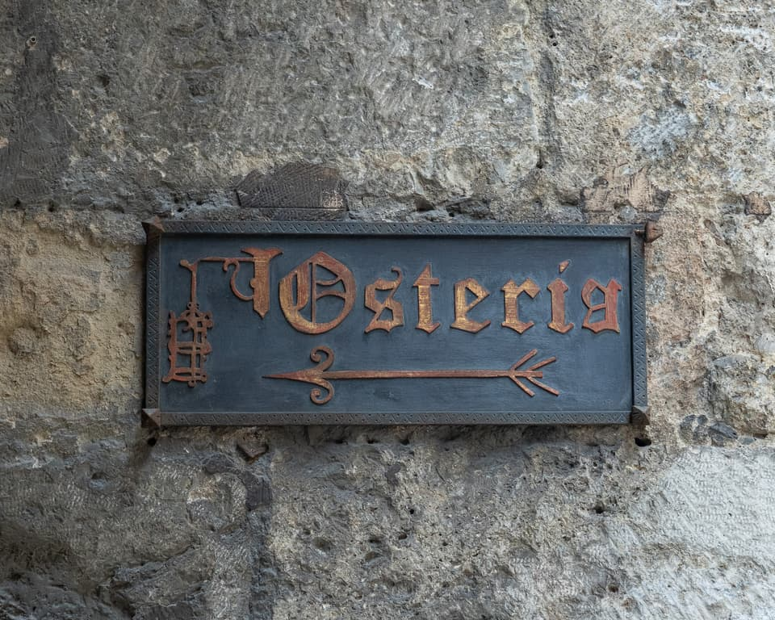
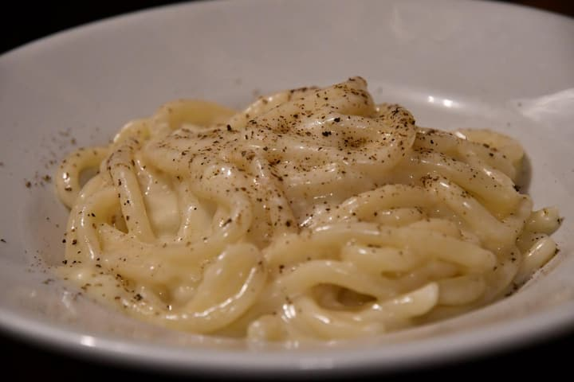
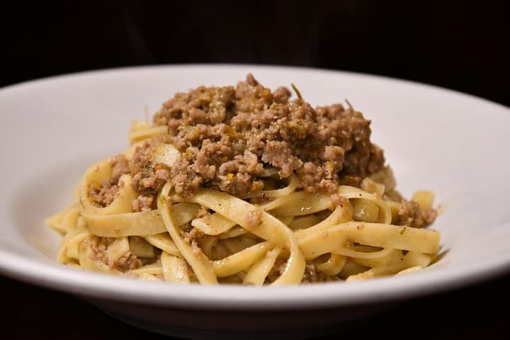
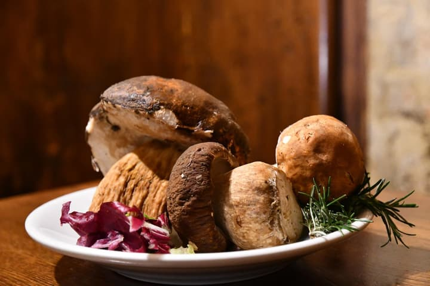
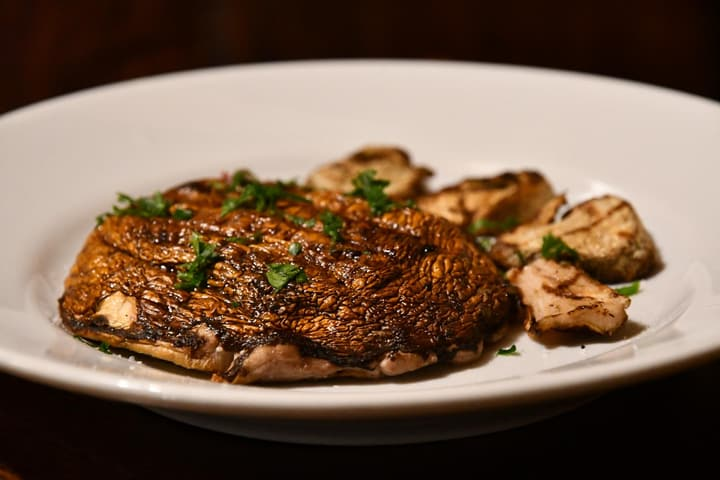
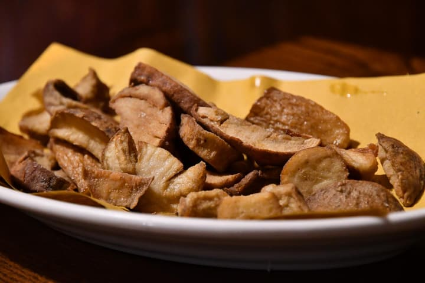
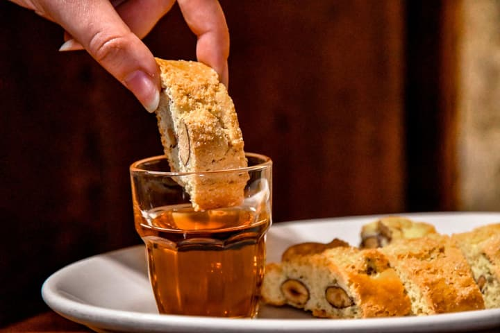

Osteria dei Rossi · Via dei Rossi, Siena
Osteria a Siena dentro le mura
Una tavola apparecchiata per voi, tra travi e lanterne di ferro battuto: cucina senese, pici, cinghiale in dolceforte, tartufo fresco, fiorentina e i vini della cantina.
Via dei Rossi 79/81, Siena · circa 5 minuti a piedi da Piazza del Campo Come arrivare
Da martedì a sabato, pranzo e cena; domenica solo a pranzo
La storia comincia quiPerché venire da noi
Aperta nel 1992. Siamo nella Contrada del Bruco, a Siena.
Dentro le mura, circa 5 minuti a piedi da Piazza del Campo.
Una sala di travi, volte di mattoni e pavimenti in cotto.
Inserita da Gambero Rosso tra i ristoranti di Siena per la carne.
Mettetevi comodi: qui si mangia come a casa, con la ciccia buona e il vino giusto.

I · La casa
Qui vi sentite a casa
Osteria dei Rossi è un posto caldo e il servizio è molto cordiale: appena entrate, c'è qualcuno che vi dà il benvenuto.
Sopra di voi le travi, alle pareti il legno, sotto i piedi il cotto. Archi di mattoni, lanterne di ferro battuto, tovaglioli a quadretti verdi e bianchi. Dal bancone si guarda la cucina; in cucina c'è Luca.
Guardatevi intorno
-

Il bancone, con vista sulla cucina -

Una lanterna di ferro battuto, nella sala in stile toscano -

Fotografie di Siena, in bianco e nero, alle pareti -

Una scelta di amari e liquori al bancone


II · La contrada
Dal 1992 in Contrada del Bruco
L'osteria è nella Contrada del Bruco, in Via dei Rossi, a Siena. La contrada ha una sola porta nelle mura: Porta Ovile. L'osteria l'ha aperta Giuseppe «Beppe» Carrieri, brucaiolo. Alle pareti, le fotografie della contrada e di Siena, come ispirazione.
Dall'inizio del 2024 la guidano Luca e Max, con Luca in cucina.
- 1992Un brucaiolo apre l'osteria
- 2024La guida passa a nuove mani
- OggiLa tavola è apparecchiata: venite a trovarci
Il Palio si corre il 2 luglio e il 16 agosto.


III · La tavola
Cucina tipica senese con radici medievali
Stufati a cottura lenta, una salsa agrodolce, la polenta accanto: cucina di una volta. Gli stufati arrivano a tavola nel coccio. Per cominciare, i crostini neri senesi, un antipasto che porta il nome della città.

Il cinghiale in dolceforte
Il cinghiale in dolceforte arriva nel coccio a due manici, scuro e lucido, con una foglia d'alloro. Il dolceforte è una salsa agrodolce che risale alla cucina medievale; il cioccolato della ricetta di oggi è arrivato nei secoli successivi.


Il cinghiale al coccio
Il cinghiale al coccio è il cinghiale in umido servito nel suo coccio, con la polenta accanto. Un piatto ricco: se volete i contorni, si ordinano a parte.
IV · I pici
Pici a Siena una pasta del Senese
I pici sono fili spessi di pasta, solo farina e acqua, arrotolati a mano e tipici della zona di Siena.
Da noi arrivano con il ragù bianco di Cinta Senese, senza pomodoro, o con il ragù d'anatra: i due che l'Oste consiglia. Poi cacio e pepe, o ragù di cinghiale. Quattro modi, una visita per ciascuno.


V · La dispensa
Cinta Senese, tartufo, porcini dalla dispensa dell'osteria
La Cinta Senese dalla fascia bianca
La Cinta Senese è il maiale nativo delle colline senesi: scuro, con una fascia bianca, la «cinta», intorno alle spalle. Lo dipinse Ambrogio Lorenzetti nel 1338–39 a Palazzo Pubblico, ed è DOP. Da noi diventa Tegamata, stufato lento senza pomodoro consigliato dall'Oste, o Tagliere del Cacciatore.

Il tartufo fresco, tutto l'anno
Quando il piatto arriva, il profumo vi ha già avvisato. Il tartufo fresco si affetta a lamelle sottili sulle tagliatelle e sul filetto alla griglia, e arriva anche sui crostoni con il gorgonzola.


I funghi porcini freschi, in tre modi
Tre modi, un solo fungo. I porcini freschi arrivano sulle tagliatelle, alla griglia, oppure fritti, come contorno.




Gli spaghetti alla chitarra
Gli spaghetti alla chitarra con il sugo dell'osteria sono conditi con pomodoro, gorgonzola e peperoncino: un sapore deciso, rosso e piccante. Se è la vostra prima volta da noi, potete cominciare da qui.

I taglieri e i crostoni
I taglieri arrivano su tavole di legno: il gran tagliere di salumi, o il Tagliere del Contadino, con miele e confetture accanto ai formaggi toscani. Poi il Bis di crostoni: gorgonzola e tartufo, oppure cacio, pere e miele. Accanto, un bicchiere di vino locale.


La fiorentina al peso
Ogni settimana Alessio, il nostro macellaio di fiducia, sceglie la selezione: tagli diversi, di razze diverse. La bistecca alla fiorentina va alla griglia e si paga al peso, che scegliete voi. È uno dei piatti consigliati dall'Oste. Il prezzo per 100 g è nel menù.
Prenota un tavolo
VI · Il dolce
Cantucci e Vin Santo
Per finire il pasto, la tradizione toscana vuole i cantucci, biscotti alle mandorle, inzuppati nel Vin Santo, il vino dolce toscano.
Un cantuccio, un tuffo nel bicchiere, un morso: senza fretta. Da noi arrivano su un piatto, con un bicchierino di Vin Santo.


VII · La cantina
Vini toscani in cantina, oltre la grotta
Una grotta di archi successivi e volte in mattoni conduce alla cantina, dove stanno i vini della carta. Ci sono i grandi rossi del Senese, e poi Bolgheri, altri rossi toscani, bianchi e bollicine. Non sapete cosa scegliere? Chiedete a noi.
I grandi rossi del Senese
- Chianti Classico
- Vino Nobile di Montepulciano
- Brunello di Montalcino
Al calice: rosso Chianti Classico Gallo Nero, IGT Toscano, Maremma DOC; bianco Vernaccia di San Gimignano, Vermentino Toscano
Per chiudere, amari e grappe, come l'Amaro di Siena.

Prenota un tavolo per telefono, WhatsApp o online
Il numero è lo stesso: scegliete se parlarci o scriverci.
Orari
- Martedì–sabato
- 12:30–15:00 e 19:00–22:30
- Domenica
- 12:30–15:00, solo pranzo
- Domenica sera e lunedì
- chiuso
Gli orari possono cambiare: chiamateci per conferma.